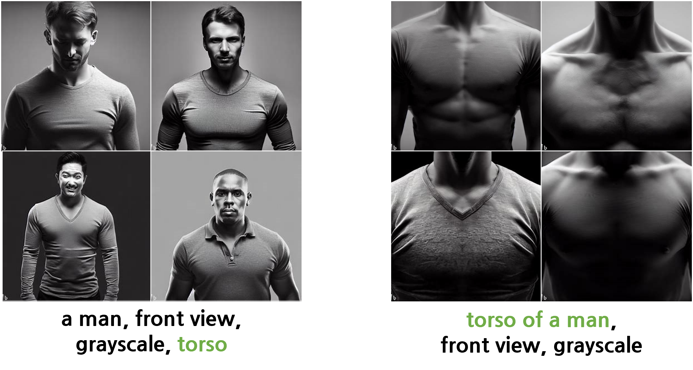

Contributor: 조남경님
Bing Image Creator
- 이미지 생성 AI를 이용해 가상의 사진을 찍는 효과를 얻을 수 있습니다.
- 인물, 동물, 사물, 풍경 등을 찍을 때 가능한 효과를 알아봅니다.
- 본 글에는 모든 사례를 담을 수 없습니다. 예시로 생각해주시고 무한한 가능성을 누벼주시기 바랍니다.
- 대개 이거 될까? 싶으면 거의 됩니다.
1. 인물 Camera shots
- 이미지 생성 AI는 사람이 그림을 보고 설명하듯 prompt를 작성하면 이에 맞는 이미지가 생성됩니다.
- 생성 모델이 학습했을 수많은 이미지-Text 쌍을 생각해 봅시다.
- 각종 사진 밑에 달린 촬영 기법에 대한 주석을 떠올릴 수 있을 것입니다.
1.1. by Reference
- 인물 사진을 찍을 때 이와 같이 다양한 범위를 적용할 수 있습니다.
- 그렇다면 Bing Image Creator를 비롯한 이미지 생성 AI에서도 가능할 것 같습니다.
- 성별 이슈를 피하기 위해 성별이 없는 마네킹을 세워놓고 카메라 샷만 바꿔가며 촬영합니다.
- 최근 자주 보이는 생성 이미지의 질적 향상이 반가운 반면 굳이 헐벗은 어린 여자들을 그려야 하는지는 의문입니다.
manikin {gender: neutral}, front view, grayscale, [camera shot]
- 구도는 정면, 색은 회색조(grayscale)로 지정하고
[camera shot]부분에 위 예시들을 번갈아가며 넣습니다. - 결과는 다음과 같습니다.
- full shot은 전신이, extreme close up은 얼굴만 나왔습니다.
- 전반적으로 배율을 높여가는 경향은 관찰되지만 위 예제와는 많이 다릅니다.
- full shot부터 medium close up까지 구분도 잘 되지 않고, close up은 그림마다 제각각입니다.
- 믿고 사용하기에는 많이 부족합니다.
1.2. by anatomy
집중하고자 하는 신체 부위를 명시하는 방식으로 카메라 배율을 조정해 봅니다.
손, 눈 등 신체 부위의 이름을 지정하면 훨씬 직관적일 듯 합니다.
full body를 시작으로 upper body(상체), lower body(하체)를 나누고 배율을 높여갑니다.

full body는 성공적입니다.
upper body와 torso도 괜찮습니다 - 사실 torso는 허리부터 목까지 나오기를 기대했습니다.
아쉽지만 일관성은 있으니 넘어갑니다.
head와 nose도 의도에 충실한 결과가 나왔습니다.
- 그러나 하반신에서 문제가 발견됩니다.
- lower body는 제대로 그려지지 않고
- legs는 유해 컨텐츠 경고가 뜹니다 - 사람이 아니라 마네킹인데도 이러네요.
- feet은 문제가 없습니다.
한편, 같은 내용이라도 프롬프트 사용 방식에 따라 다른 결과가 나옵니다.
남성의 torso 사진을 제작했습니다.
한 번은 a man, front view, grayscale, torso로 제작했고
다음에는 torso of a man, front view, grayscale로 제작했습니다.
의미상으로는 완전히 동일한 것으로 생각되나 결과물은 다음과 같습니다.
여성도 마찬가지입니다. 남성과 동일하게 적용됩니다.
마네킹 다리는 경고를 띄우면서 여성의 상체는 부각시키는 점이 의아하기도 합니다.
명시적인 가이드라인이 없어 시행착오를 통해 알아가야 합니다.
2. 건물, 동물, 사물
- 그렇다면 신체 부위가 없는 건물, 동물, 사물은 어떨까요?
- 동물이라면 head, feet 등을 그대로 사용할 수 있겠지만 건물과 사물은 그럴 수 없습니다.
- 게다가, 경험적으로 피사체의 크기가 달라지면 같은 효과도 결과가 달라짐을 알고 있습니다.
2.1. 건물
buildings in a city, [camera setting]
프롬프트를 위와 같이 고정하고
[camera setting]만 변화를 줍니다.None은 아무런 입력을 하지 않은 결과입니다.

None의 일상적인 풍경이 설정에 따라 완전히 바뀝니다.
fisheye(어안렌즈)와 wide angle(광각)은 비슷한 듯 다릅니다.
wide angle과 wide view는 시점이 다릅니다.
35 mm는 눈 앞에서 보는 것 같고 telephoto는 줌을 당긴 듯 합니다.
bokeh와 lomo가 독특한데, 초점이 맞지 않은 듯 필름에 빛이 들어간 듯 합니다.
2.2. 동물
white cat, [camera setting]

- 지난 글의 하얀 고양이를 다시 사용합니다.
- fisheye와 wide angle이 비슷해 보이지만 fisheye가 카메라를 들여다보는 느낌이 더 강합니다.
- wide view는 None, 35 mm, telephoto와 차이를 느끼기 어렵습니다.
- bokeh가 진가를 발휘합니다. 고양이 주변으로 이슬이 아롱거리는 듯 합니다.
- lomo의 효과는 시크한 표정과 잘 어우러집니다.
2.3. 사물
water droplet, [camera setting]

- 가장 작은 물체 중 하나인 물방울을 그렸습니다.
- 전체적으로 fisheye를 제외하면 화면의 변화를 알아채기가 어렵습니다.
- bokeh와 lomo가 독특한 효과를 줄 뿐입니다.
3. 색의 3요소 제어 - 채도, 명도, 색상
- 온라인에서 볼 수 있는 생성 이미지의 공통점 중 하나는 색상이 화려하다는 점입니다.
- 의도적인 설정인지는 모르겠으나 전반적으로 대비가 강하고 현란한 색의 그림이 많습니다.
- 실제로 동물이나 인물 위주로 생성시키면 왠지 그런 그림들이 많이 그려집니다.
- 그러나 색의 3요소 - 채도, 명도, 색상을 전반적으로 조정하면 다채로운 연출을 할 수 있습니다.
3.1. 전반적 제어
rainbow, [color setting]
무지개를 다양한 효과와 함께 그린 예시입니다.

같은 무지개라도 밝고, 어둡고, 선명하고, 흐리고, 흑백으로 표현할 수 있습니다.
특정 색상을 지정하여 붉은 느낌이 강하게 할 수도 있으며,
심지어 은색이 강하게 처럼 존재하지 않는 색을 지정할 수도 있습니다.
3.2. 부분적 제어
- 색 요소 지정을 부분적으로 적용할 수도 있습니다.
- 지난 시간에 익혔던 중괄호
{ }를 사용하면 편리합니다. - 전반적인 느낌을 지정한 후 특정 부분에만 다른 속성을 인가하는 식입니다.
a basket of tropical fruits {grayscale}, a banana at center {yellow}, top view

4. 결론
- 사진 용어를 사용한 배율 제어에 한계가 있는 것은 아쉽지만 다른 방식으로 강조 부위에 집중할 수 있습니다.
- torso 예시에서 보았듯 같은 의도도 표현에 따라 결과물이 다르기 때문에 다양한 시도를 통한 학습이 필요합니다.
- 여러 방법을 조합하여 원하는 결과물을 연출하시기 바랍니다.